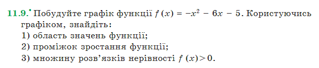
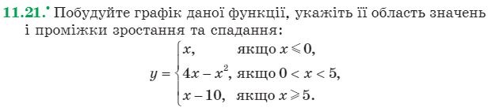

Лабораторна робота студентки 1 курсу групи "Математика" Чулкової Анни Олегівни
Звіт до лабораторної роботи №4.
"Графіки функцій"
1) Глава 6.1 "Степенева функція"iframe з результатом у png форматі
2) Глава 6.2 "Тригонометричні функції"iframe з результатом у png форматі
3) Глава 6.3 "Обернені тригонометричні функції"iframe з результатом у png форматі
4) Побудова графіків функції з використанням Maxima:(11.№, 11.№+13, де номер - це Ваш порядковій номер в групі.Номер 9
iframe з результатом у png форматі


5) Конспект: "Математичні функції в wxMaxima"